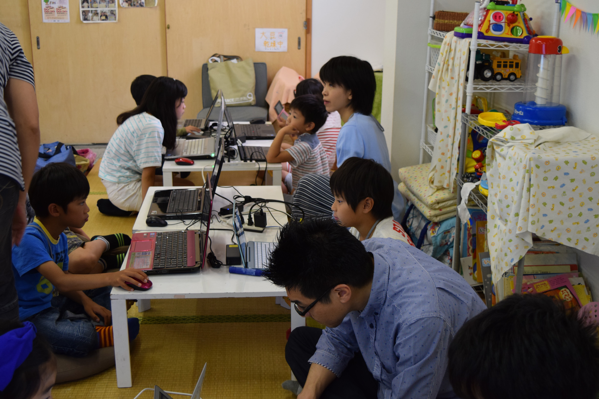
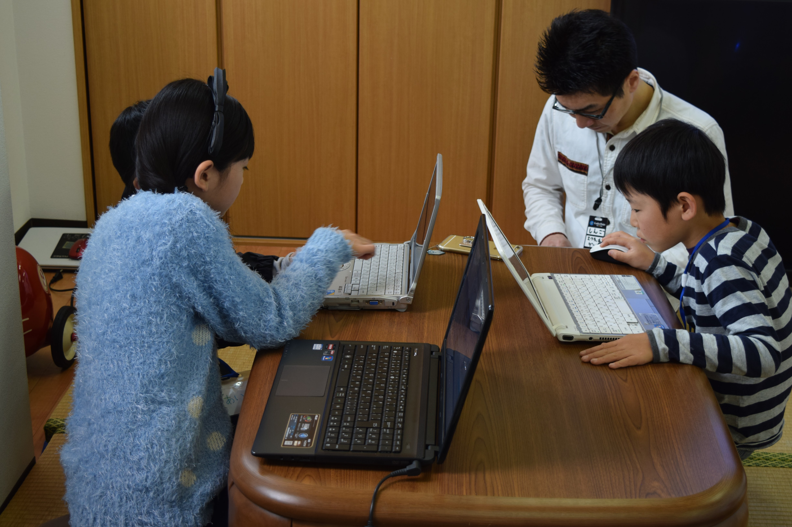

CoderDojo堺は、子どもたちにプログラミングやコーディングのサポートをする非営利活動です。
CoderDojoとは？
CoderDojoとは、「プログラミングクラブ」です。
このクラブは、同好会などの意味を表し、プログラミングを楽しむクラブとなります。
発足は2011年にアイルランドから始まり、子どもたちにプログラミングを学ぶ場を提供するボランティア主導の世界的な非営利活動です。
Dojoの数は世界中で1,000以上にも及びます。
CoderDojoはオープンソース※1であり、各地でボランティアが自主的に運営しています。
CoderDojo公式サイト（英語）
CoderDojo Japan公式サイト
※1オープンソースとは：
オープンソース（ウィキペディア）
CoderDojo堺とは？

何をするところ？
CoderDojo堺では、プログラミングを自由に学習し、制作する事ができます。
もし、ロジックなどで悩んでいた場合、ボランティアで参加しているメンターに相談する事ができます。
ただし、初めて参加する忍者（子ども）には、Scratchを利用して、操作方法を含めてチュートリアルを行っています。
このチュートリアルも必須ではなく、自由にプログラミングしてもらって構いません。
Dojoの最後には、忍者（子ども）たちが作った作品を、みんなの前で発表してもらっています。
この発表会は、未完成でも構いません。どの様なものを作っていて、以降、どの様にしていくかを発表してもらっています。

ものづくりの楽しさを！
CoderDojo堺は、忍者（子ども）たちにプログラミングを通じて「ものづくりの楽しさ」を学んで欲しいと考えています。
作るものは、何でも構いません。プログラミングは、ゲームなどのアプリケーション、ホームページなど、様々なものが作れます。

一緒に考える場所に！
CoderDojo堺のDojoは、1回約2時間になります。
プログラミングするには、その時間はとても短いと思います。
そこで、Dojoは、わからない事を相談しにくる場とし、メンターと一緒に考え、忍者（子ども）が答えを出す場所にしたいと考えています。

大人も楽しんで欲しい！
メンターはボランティア活動なので、忍者（子ども）の事だけを考えるのではなく、大人も一緒にプログラミングを楽しんて欲しいと考えています。
※CoderDojoでは、ボランティアとして参加してくれている大人をメンターと呼んでいます。
サポート
CoderDojo堺の運営は、サポートをしてくれるメンターや、会場費用などの運営にかかる費用をサポートして頂くことにより継続できています。
もし、あなたにできることがあればCoderDojo堺を一緒に育ててください。
寄付・寄贈に関してはこちら
ブログ
CoderDojo堺の今までの活動内容をブログとして掲載しています。


カレンダー
関西で活動しているCoderDojoの予定が書かれたカレンダーです。
関西の各チャンピオン（主催者）が順次、記入して頂いています。
ScratchStudio「CoderDojo堺」